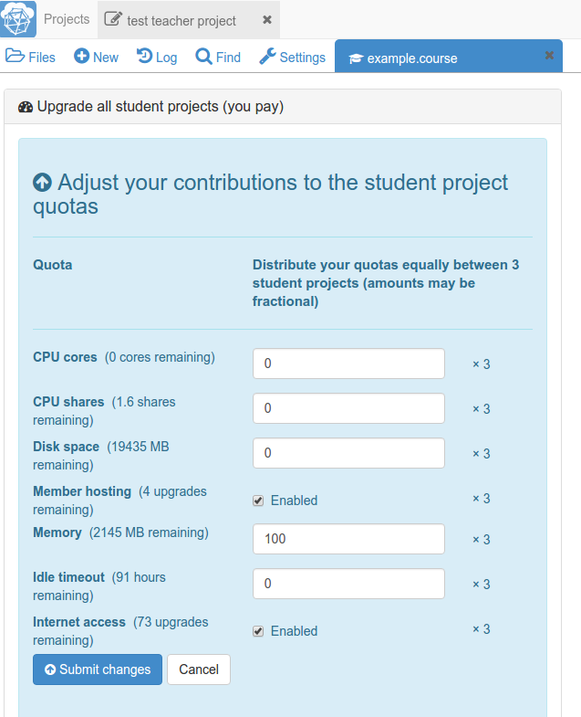

Getting started with SageMathCloud
This section would help you familiarise with some of the Functions of SageMathCloud.
Lecturers - Sign up for an account
Basic usage of SageMathCloud is free but before you can start using it, you need to create an account. This can be done at https://cloud.sagemath.com/
It is strongly suggested that you, and your students, sign up using your institutional email addresses. This makes it much easier to find students in the system.
Getting your students to sign up
You don’t need to worry about getting accounts for your students ahead of time.
Once you’ve created your course in SageMathCloud, you just a add list of student email addresses to it. All students immediately get sent a course invite, and when they create an account with that address, they are good to go.
Upgrades to student projects
SageMathCloud accounts are free for you and your students and you can create as many projects as you desire. These basic projects have access to all of SageMathCloud’s functionalities with one exception: basic projects are not able to download or upload files to other sites on the internet - you can only upload and download between your computer and SageMathCloud. Additionally, basic projects run on free servers which are shared with many other users. You can purchase upgrades for projects that allow internet access and will move the projects to run on members-only servers.
There are two ways students can receive upgrades for their projects: - Students can pay a $9/semester fee - You or someone at your school can purchase a course package - Course packages provide you with a number of member hosting upgrades and internet access upgrades that you can distribute to students.
To distribute the project upgrades to the students:
- The person who purchases the course package needs to be a collaborator on the project that contains your course.
- Open the .course file and go to the course Settings tab (the wrench icon between the Handouts tab and the Shared Projects tab).

- Under Upgrade all student projects (you pay), select
Adjust quotas... - Select the checkbox for Member hosting and Internet access and click
Submit changesto distribute these two upgrades to each student’s course project.- These upgrades only apply to the student course projects and not to any other projects students may have created.

Screenshot below shows results of distributing upgrades to student projects
 —
—
- If you have purchased a personal subscription and have unused project upgrades, you can share those with your students as well.
Contact help@sagemath.com if you have any questions about project upgrades and course packages.